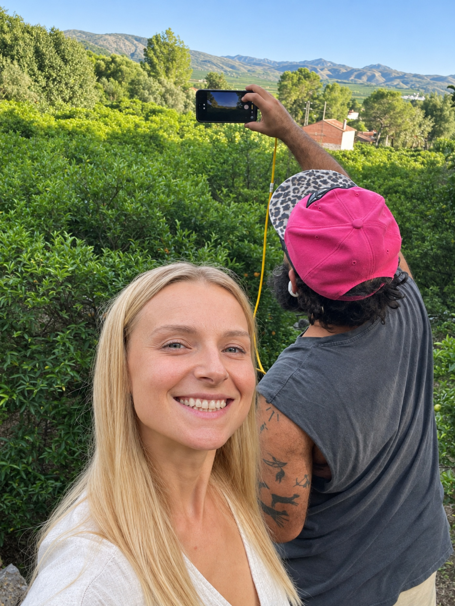

A working citrus farm and reforesting hillside in Carcaixent, Valencia.

An independent farming family working a forty-year-old orange grove and a hillside forest in transition. This land was bought with one clear intention: grow honest fruit, restore what was damaged, and keep farming for the long term.
Our Story →Regenerative practices, a native forest in transition, and a soil carbon baseline established in 2026. Finca Tariqa is building toward verified CO₂ removal — not as an offset, but as part of how the land is managed.
1.7 hectares of fire-prone Aleppo pine are being cleared and replanted with Quercus ilex — the native holm oak of the western Mediterranean limestone. Holm oak lives 700 years. It is the longest-lived carbon store on this hillside.
A soil carbon baseline is being established with an IVIA-accredited laboratory in 2026. Registered with Agreena under Verra VCS VM0042. When the EU CRCF market opens, the farm enters with years of documented improvement — not a starting line.
No synthetic inputs. Organic matter returned to the soil. Cover crops and native ground flora encouraged. The practices that build soil health also increase the land's ability to capture and hold carbon — and qualify for EU organic conversion payments.